Kobe, Hyogo: things to do, food and stays
Kobe · Hyogo
Kobe
Highlighted on the Hyogo map.
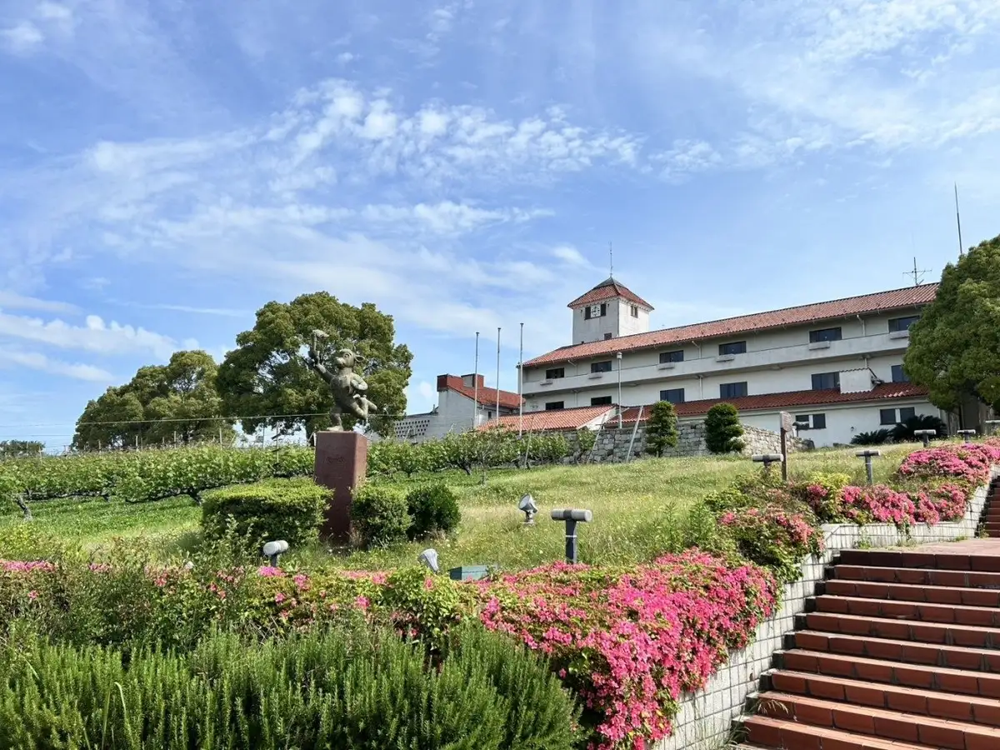
Stay
天地の宿 奥の細道
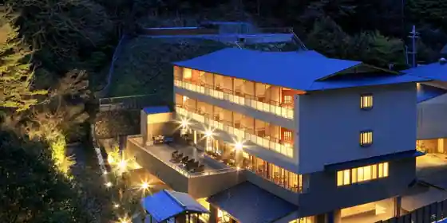
Tenchi No Yado Oku No Hosomichi
Inn at Arima Onsen in Kitakuarima, Kobe.
有馬温泉 欽山
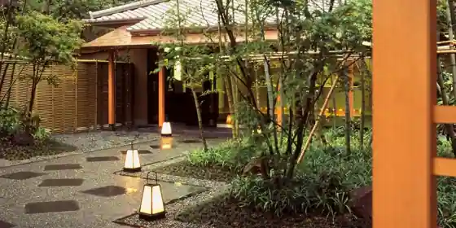
Arima Onsen Kin Yama
Inn at Arima Onsen in Kitakuarima, Kobe.
THE ORIENT（旧ORIENTAL HOTEL）
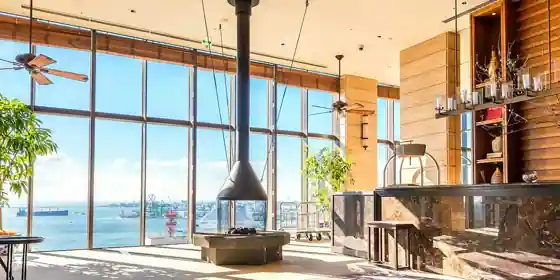
THE ORIENT(Kyu ORIENTAL HOTEL)
Inn in Chuokukyo, Kobe with scenic views.
有馬温泉 四季の彩 旅篭 客前料理と全室金泉露天付の湯籠り宿
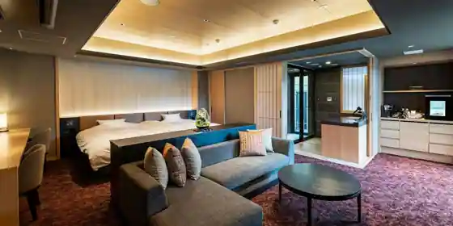
Arima Onsen Shiki No Sai Hatago Kyaku Mae Ryori To Zenshitsu Kanaizumi Roten Tsuki No Yu Komori Yado
Inn at Arima Onsen in Kitakuarima, Kobe with open-air baths.
神戸ポートピアホテル
Kobe Potopia Hotel
神戸メリケンパークオリエンタルホテル
Kobe Meriken Park Orientaru Hotel
神戸北野ホテル
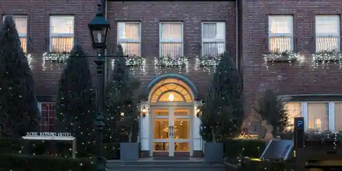
Kobe Kitano Hotel
有馬温泉 御幸荘 花結び
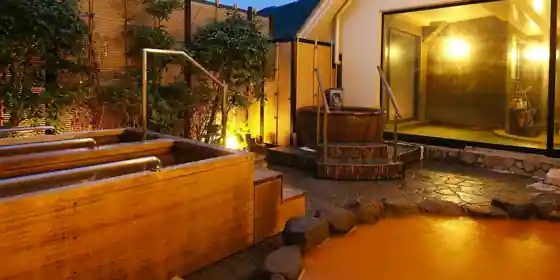
Arima Onsen Miyuki So Hana Musubi
Inn at Arima Onsen in Kitakuarima, Kobe with in-room dining.
神戸ベイシェラトン ホテル＆タワーズ
Kobe Beishieraton Hotel & Tawazu
Hotel at Izumikakenagashino Onsen in Higashinadakukoyo, Kobe with free-flowing hot spring baths and parking.
有馬温泉 nebi
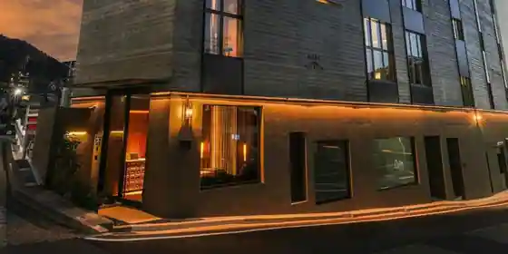
Arima Onsen nebi
Inn at Arima Onsen in Kitakuarima, Kobe with a sauna.
ホテルモントレ神戸
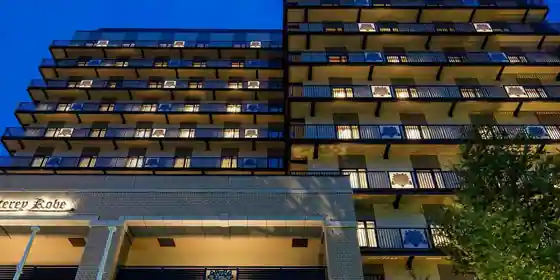
Hotel Montore Kobe
Hotel in Chuokushimoyamatedori, Kobe with breakfast available.
神戸みなと温泉 蓮
Kobe Minato Onsen Hasu
Inn at Kobeminato Onsen in Chuokushinko, Kobe.
Dining
北野坂 木下
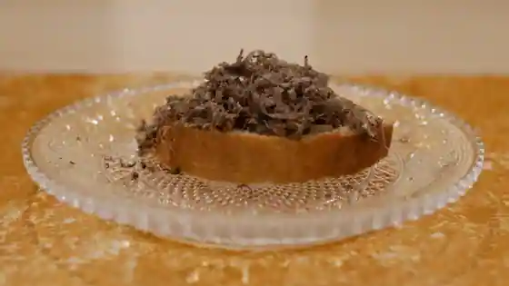
Kitano Saka Kinoshita
料理屋 植むら
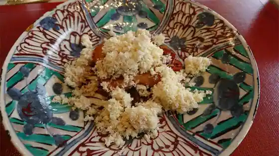
Ryoriya Shoku Mura
カセント
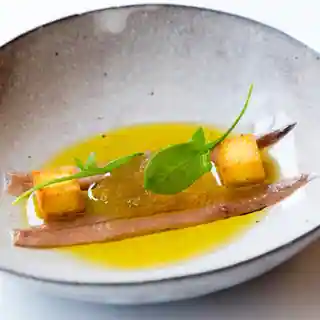
Kasento
entre nous
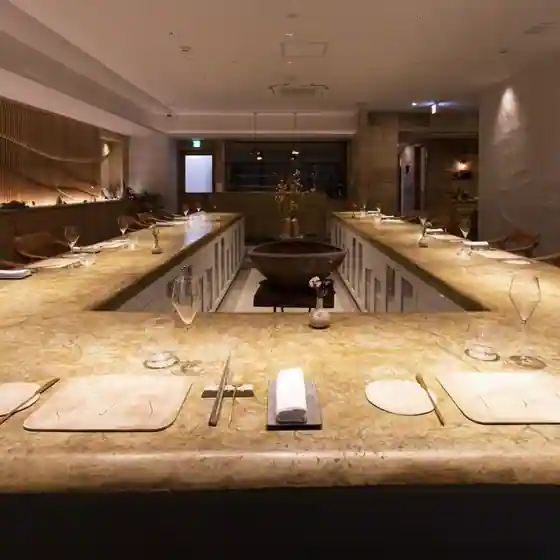
entre nous
bb9
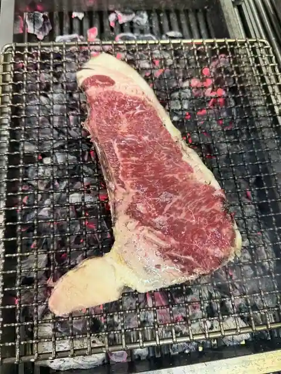
bb9
寿志 城助
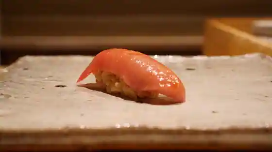
Hisashi Shiro Jo
すし うえだ
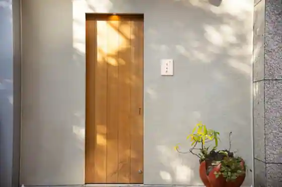
Sushi Ueda
ラグナ ザ バー
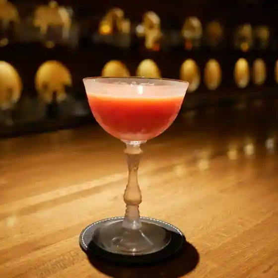
Raguna Za Bar
麤皮
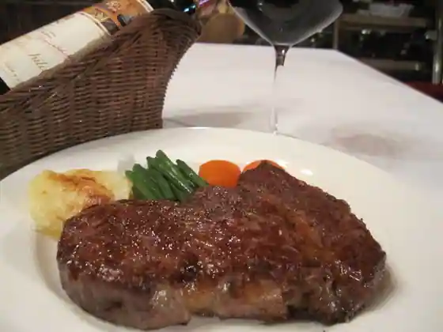
Local spot
トンカツとワイン 日月
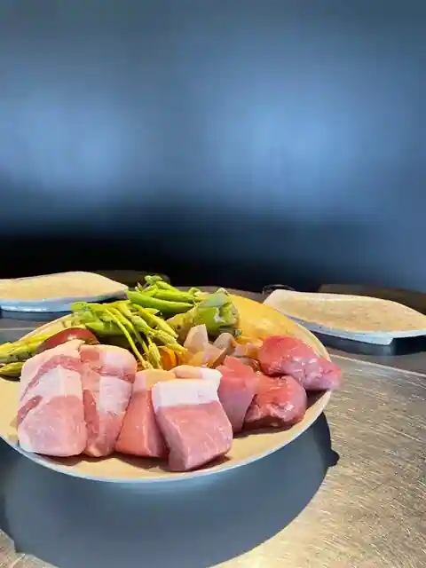
Tonkatsu To Wa Inn Nichigetsu
チッチャ
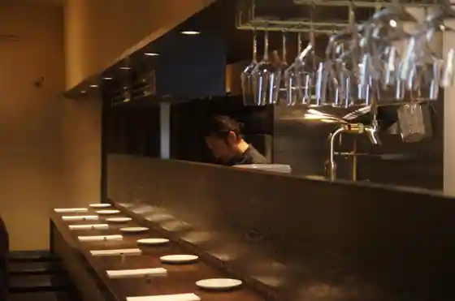
Chitcha
エスピス
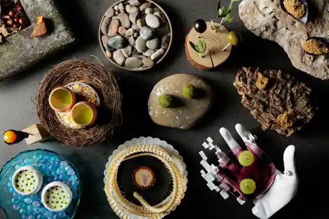
Esupisu
Aspirant
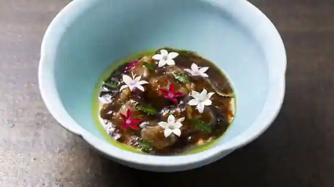
Aspirant
バー ル・サロン
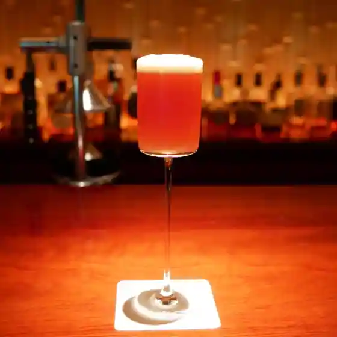
Bar Ru Saron
SETTAN
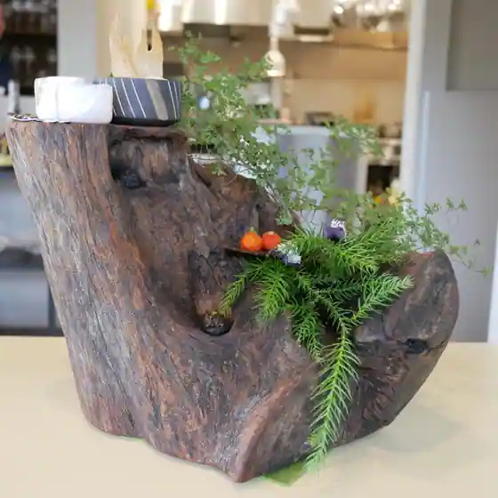
SETTAN
ラヴニュー
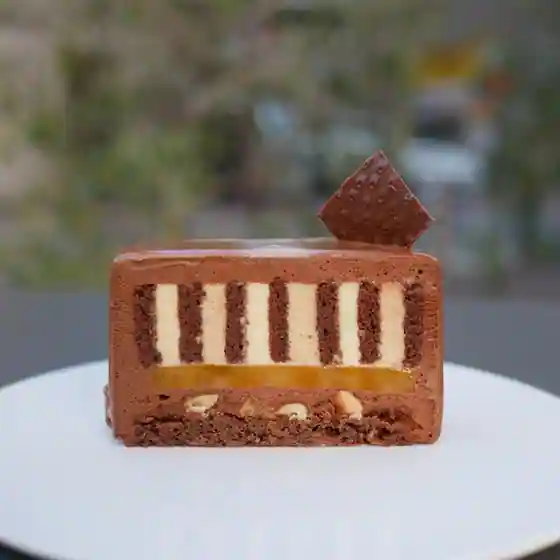
Ravunyu
鶏一途
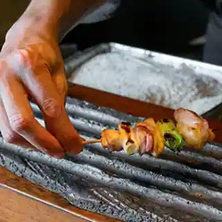
Niwatori Ichizu
炭焼塩ホルモン『あ』神戸酒場
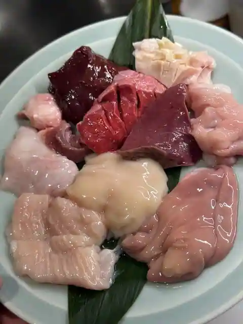
Sumiyaki Shio Horumon (A) Kobe Sakaba
但
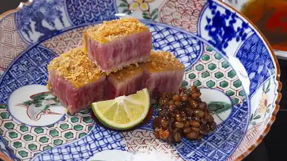
Tada
雄三郎
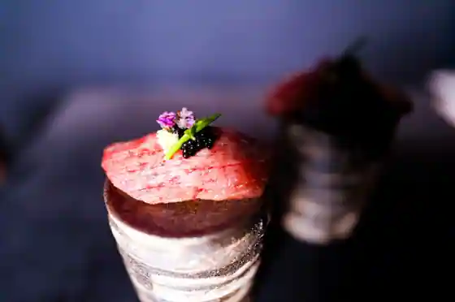
Yusaburo
ふじお商店
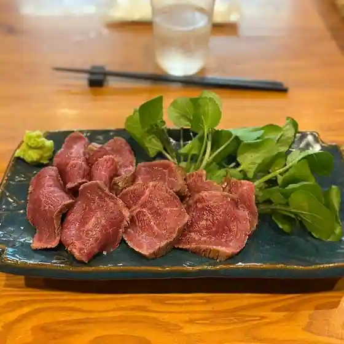
Fujio Sho
リストランテ ハナタニ
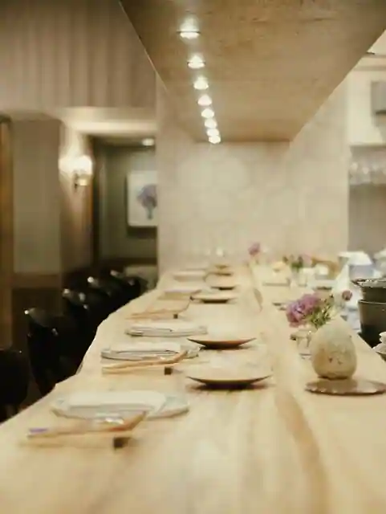
Risutorante Hanatani
福星
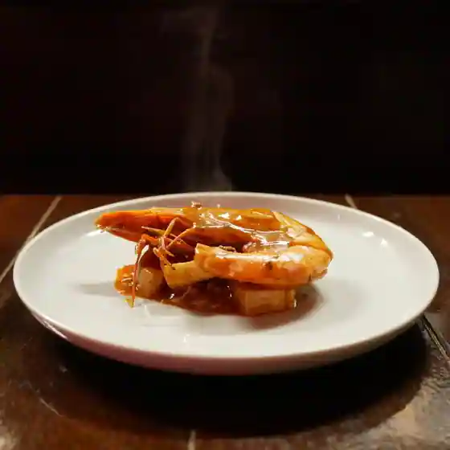
Fuku Hoshi
シェ シロ
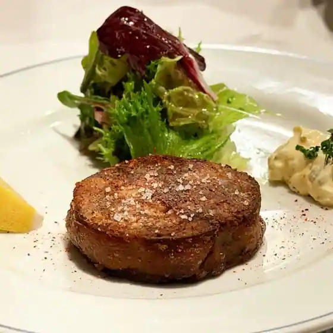
Shie Shiro
Sights
AQUARIUM × ART átoa
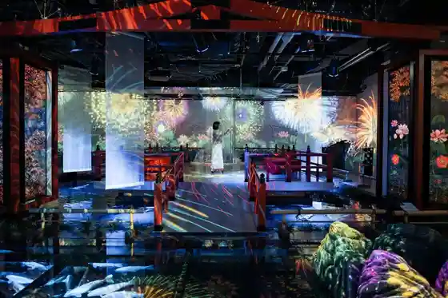
GLION ARENA KOBE
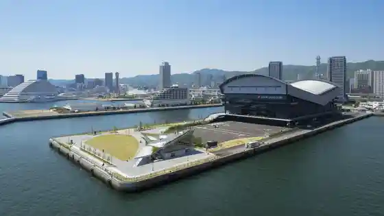
Uroko no Ie
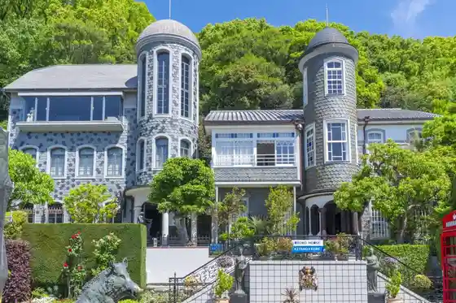
Kobe Aguri Park (Kyu : Nogyo Park)
Dezain Kurieiteibu Center Kobe (KIITO)
Nana Farm Suma
Ferishimochokoreto Museum
Merigan Park
Mitsui Autoretto Park Marinpia Kobe
Yasuhisa Ryo Shrine
Rokko Garden Terasu
Nankin Town
Nunobiki Falls
Maya Yama Mari Hoshi Dai
Akashi Kaikyo Bridge
Arima Hon Onsen Kin Baths
Arima Onsen
Arima Onsen Taiko Baths
Sakura Masamune Memorial Museum Sakura Utage
Sawa no Tsuru Museum
Zuiho Tera Park
Ikuta Shrine
Hakutsuru Shuzo Museum
Kobe Dobutsu Okoku
Kobe Anpanman Kodomo Museum & Moru
Kobe Haba Land
Kobe Pototawa
Kobe Mita Puremiamu Autoretto
Kobe Ritsu Rokkosan Ranch
Kobe Ritsu Oji Zoo
Kobe Nunobiki Habu Sono / Ropuei
Kobe Minato Kuruzu
Kobe Minato Shinsai Memorial Park
Kobe Shushin Kan (Fukuju)
Kobe Suma Shiiwarudo
Kiku Masamune Shuzo Memorial Museum
Suma Urayama Ue Yuen
Kazamidori no Kan